background-image: url("lasercutting_bg.jpg") background-position: center background-size: contain class: center, middle # Computer Controlled Cutting --- class:left # Workflow - Start with a **digital model** of the project - Obtain 2D profiles of items to cut - Finalize layout and enhancements - cut lines are **Vectors** - enhancements/engravings are **Raster** - Send for Computer Controlled Cutting - Laser cutting & engraving - Vector controlled knife - 2D/2.5D flatbed router <div width="90%" height=300px> 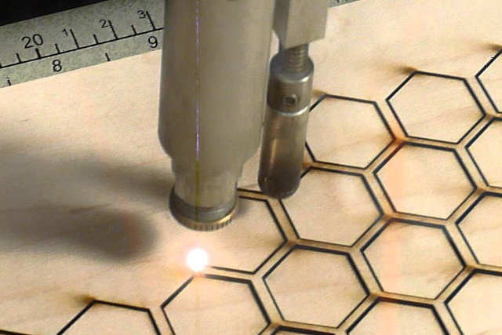 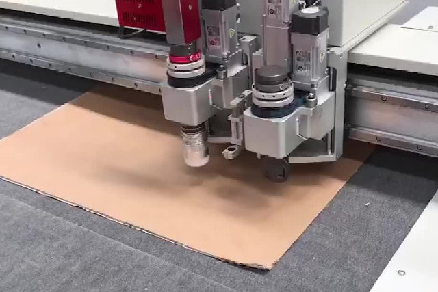 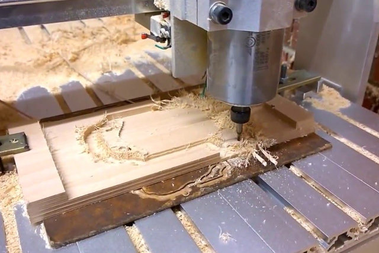 </div> --- # Laser Cutting - Process where material is placed in X-Y plane and a LASER is moved across the profile to be cut - Light Amplification by Simulated Emission of Radiation - Laser is focused to a tight spot, beam "cuts" (ionizes material) at that spot - Moving the Laser cuts the material. - Laser beam is continuous or pulsed. .center[] --- # Controlling the Cut ### The "**CUT**" is controlled by - Speed of the movement of the laser - Slow speeds, more intense vaporisation, deeper cuts - Slow speeds cause charring of material - Power (intensity) of the laser - Higher intensities produce deeper cuts - Higher intensities are required for more dense material - Frequency of pulsation - Most lasers are pulsed - Higher pulsing rates are required for denser material - Acrylic 600-800 ppm - Wood 200-300 ppm ### Performing "test" cuts of 20x20mm are recommended. --- # Recommendations - Each system comes with a set of recommendations e.g. [Epilog Laser Material Settings](https://www.epiloglaser.com/assets/downloads/fusion-material-settings.pdf) <div width="100%" height="100px"> 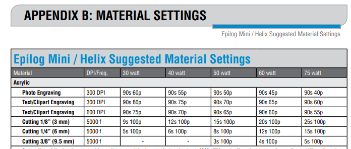 </div> - Use the recommendations as a **starting** point - Rule-of-thumb: - Never use 100% Power - Observe the cutting process - Look out for "Best Practices" --- # Materials ### What you can cut: - Ref: ([Epilog Laserable Materials](https://www.epiloglaser.com/how-it-works/laser-material-compatibility.htm)) - Acrylic - Paper products - Wood (preferably not MDF) - Leather ### What you should **NOT** cut: - [Never Cut These Materials](https://duckduckgo.com/?q=laser+%22never+cut+these+materials%22&t=canonical&ia=web) - Samples - PVC emits chlorine gas - Polycarbonate cuts poorly, discolors, catches fie - ABS emits cyanide gas, melts - Polystyrene foam catches fire and melts - Fiberglass emits fumes - Metals (cannot be cut with a CO2 laser) --- # Preparing Your Design - You require a 2D (Vector) profile - DXF (AutoCAD Data eXchange Format) - SVG (Scalable Vector Graphics) - PDF (Portable Document Format) - The cut (Vector) lines are converted to "hairline" or < 0.1 mm - All other profile objects are treated as engravings (Raster) - The profile is sent to the Laser using a Printer Driver - The Laser cutting software takes over - proprietary to each laser system - [Epilog](https://www.epiloglaser.com/tech-support/epilog-drivers.htm) - [Universal Laser Systems](https://www.ulsinc.com/support/software-downloads) - [RDWorks](https://www.thunderlaser.com/laser-download) - requires orientation/practice for each system - workflow is similar --- # Engraving - An engraving is a profile that instructs the laser to "mark" the material - "Laser Marking" causes the laser light to etch, engrave, mark the material without cutting through - Can be used to create - graphics (Logos, symbols, photographs) - text - cosmetic features - Added at the time of cutting - Similar to Inkjet/Laser printing on paper - Controlled using laser software - at a lower power - usually color-coded - In operation, engraving is done before the cut <div width="90%" height="100%"> 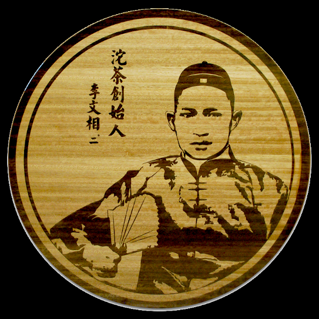 </div> --- # Kerf <div width="90%" height="100%"> <img src="kerf.png" width="auto" height="320px" > </div> - amount of material removed in the cutting process - can be fine-tuned using laser cutting parameters - approximately 0.2~0.8 mm - for place-fit cutting, adjustments are made to compensate for kerf - "holes" made smaller - "tabs" made larger --- # Creating your "Cut" Profile ### Any 2D profile - convert line widths to hairline (or < 0.1mm) - convert engravings to color (RGB) intensities - send to Laser software ### 3D profiles/models - select the 2D plane profile - export the profile as DXF, SVG or PDF - work the 2D profile --- # Obtaining DXF profiles from Fusion 360 -1 [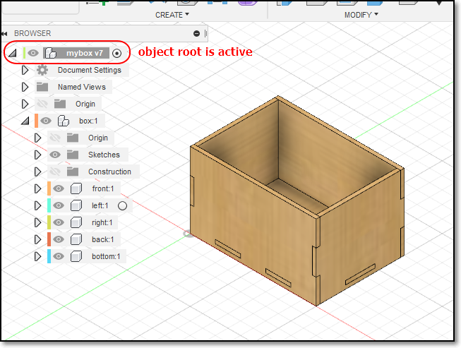](01_3d_object.png) ### We want to cut & decorate the 2D profile (front of box) Ref: [Lasercutting Notes](https://rdorville.github.io/EP1000/Lasercutting/lasercutting.html) --- # Obtaining DXF profiles from Fusion 360 -2 [<img src="02_isolate_profile.png" alt="Isolate the object" style="height:360px;"/>](02_isolate_profile.png) ### Isolate the face / profile you wish to cut --- # Obtaining DXF profiles from Fusion 360 -3 [<img src="03_create_2d_sketch.png" alt="Create a 2D sketch" style="height:360px;"/>](03_create_2d_sketch.png) ### Create a NEW (2D) sketch on the plane of the object ### Save the Sketch --- # Obtaining DXF profiles from Fusion 360 -4 [<img src="04_export_dxf.png" alt="Export to DXF" style="height:360px;"/>](04_export_dxf.png) ### Export the sketch to a DXF file ### Check it! --- # Checking your 2D profiles [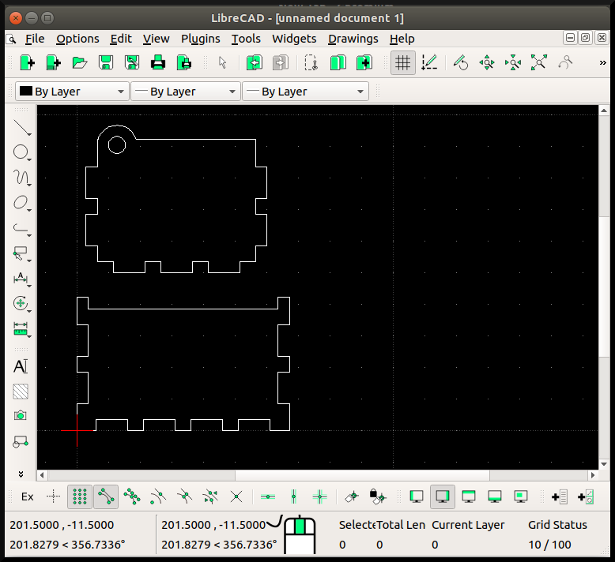](05_check_dxf.png) ### Use LibreCAD, Inkscape, CorelDraw, Illustrator ### Can also layout your cuts before you come to FabLab --- # Preparation for Laser Cutting using CorelDraw ### Coreldraw - the preferred software (licensed) - handles both vector and raster graphics - sends the output to the Laser cutter using a printer driver ### Workflow - Open Coreldraw, select "New", check paper size - File > Import - DXF, PDF, SVG - Coreldraw file (.CDR) (version important) - Layout your cut profiles - use guides - convert cut lines to hairlines (RED/BLACK) - add engraving graphics (RGB colors) - send for printing --- # CorelDraw TouchUp [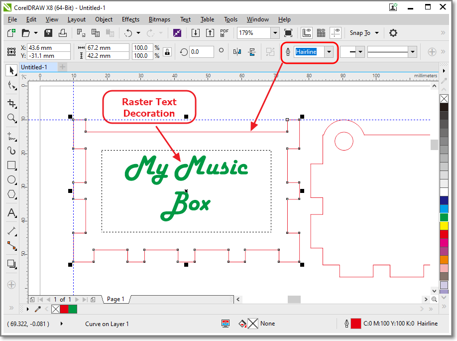](06_coreldraw_enhancements.png) - Check cut lines are hairlines - Add raster graphics/decorations - Use colors (RGB) to define raster/vector operations - Send layout to Laser cutter using "**PRINT**" --- # ULS Lasercutting software [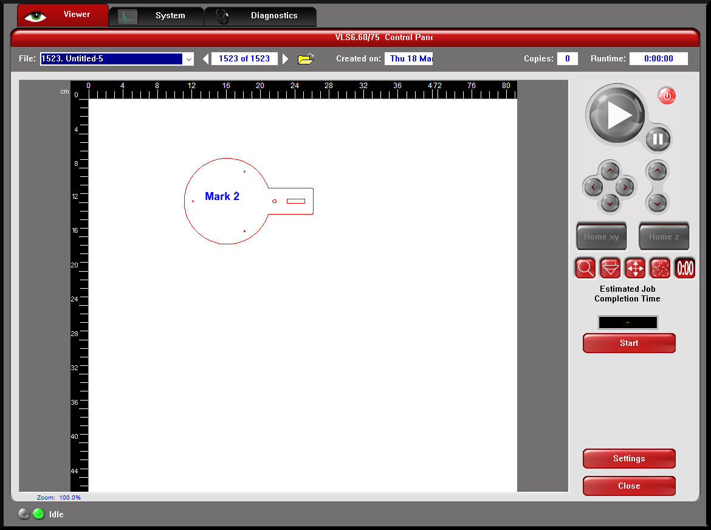](ULS_control_software.png) Controls - Placement of job (to match material) - Settings for laser & material - Controls job operations --- # ULS Settings For Laser [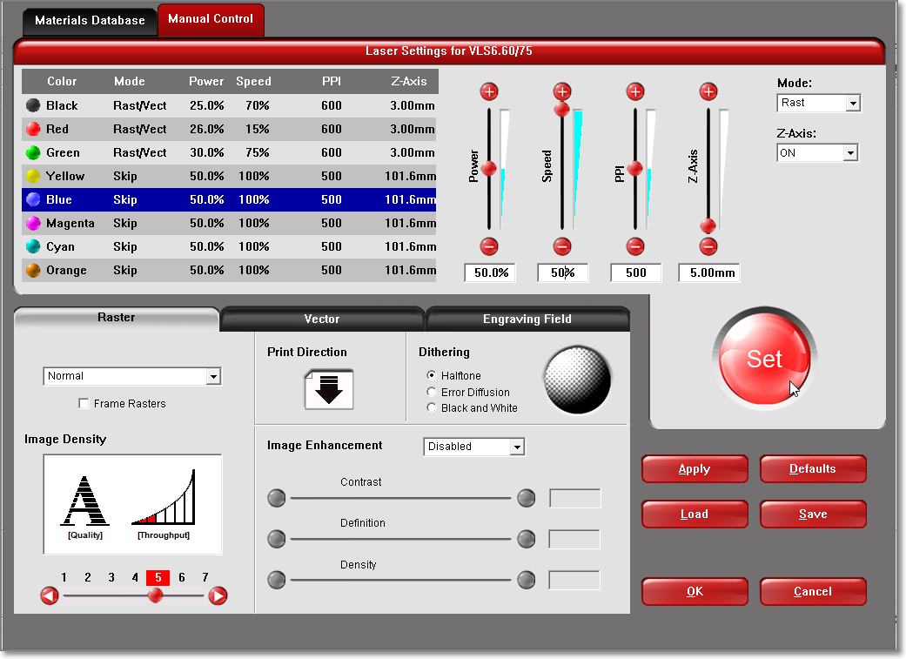](ULS_settings.png) Controls - Laser power, speed, frequency - Material thickness - Color cutting (Raster/Vector) operations - Access to materials database --- # ULS Workflow: - Open ULS software, it should show the cut/engrave profile - Use settings to change - Laser parameters based on color - Raster (engrave) before Vector (cut) processing - Layout and position items to cut - Perform test cut / Examine extremities of cut - Close cover and cut (GO) --- # ULS Placement of cuts [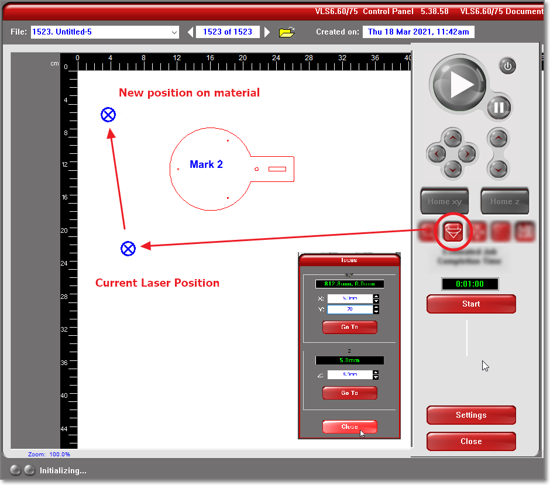](ULS_01_pointer_postion.png) ### Locate pointer (Reset/Home) ### Position pointer - using the mouse - absolute positioning using data input --- # Move Cut Profile to Pointer Position [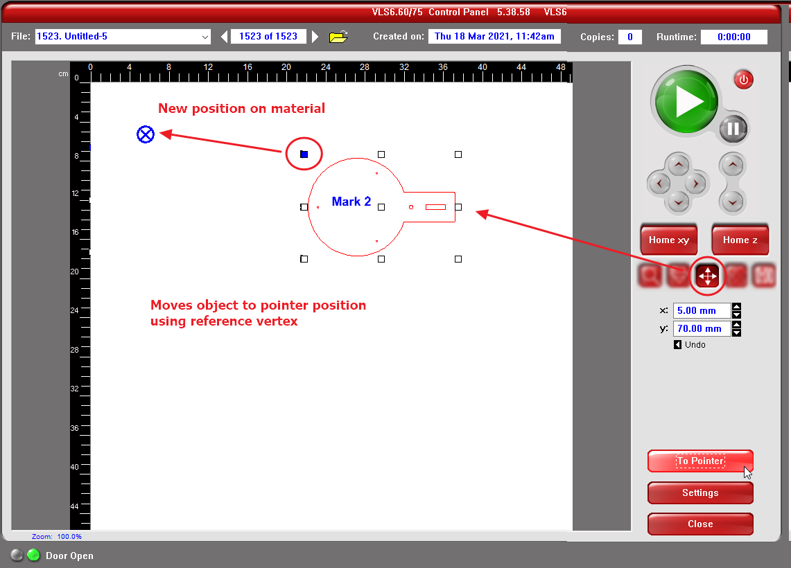](ULS_02_move_object.png) ### Position profile - Highlight the vertex reference point - Use MOVE to move the reference vertex to pointer --- background-image: url("lasercutting_bg.jpg") background-position: center background-size: contain class: center, middle # Computer Controlled Cutting ### End [Presentations](https://rdorville.github.io/digfab)